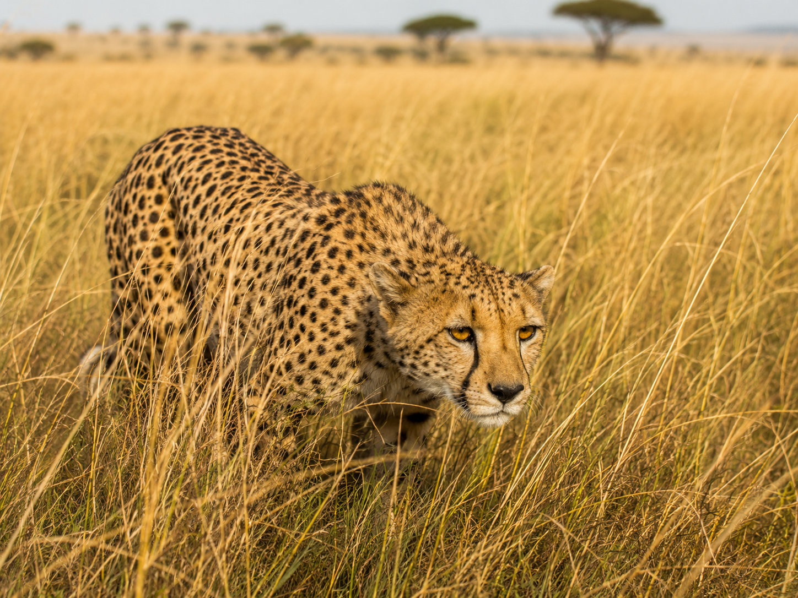
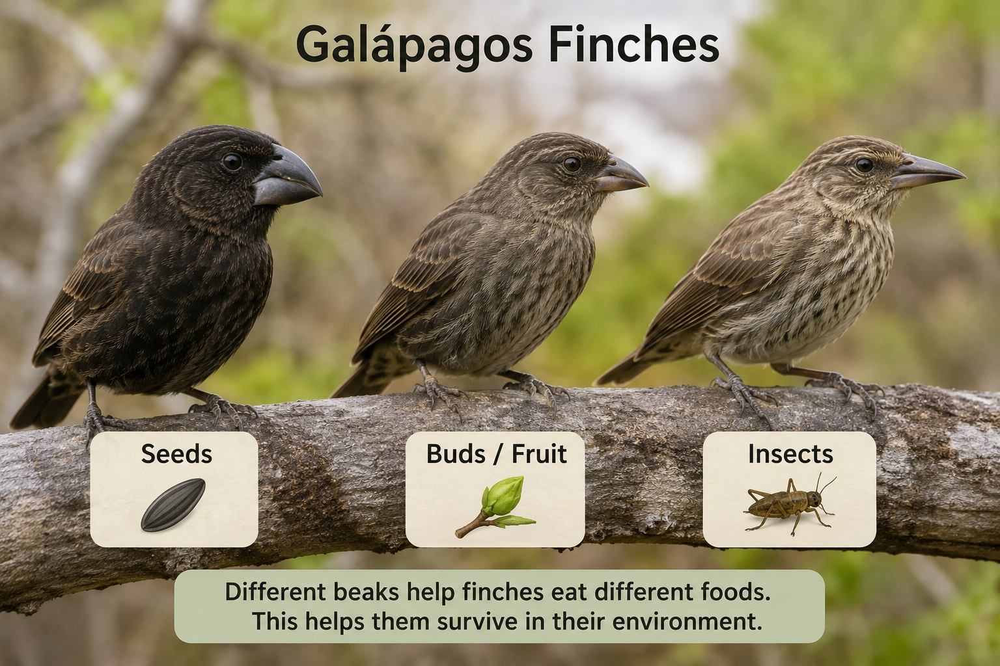
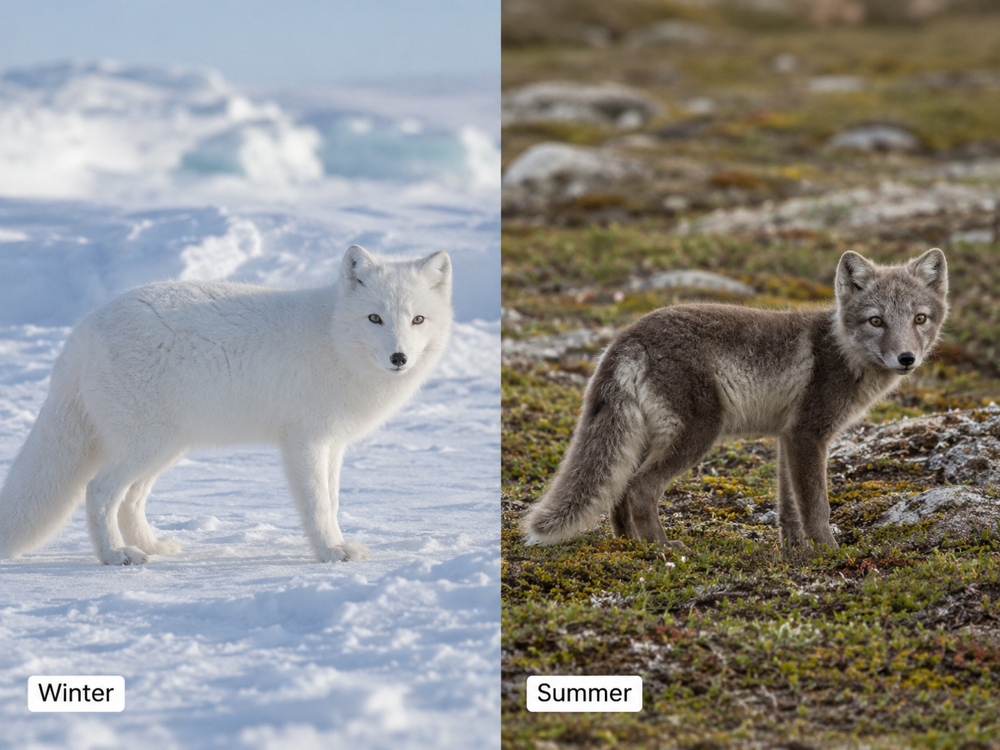

Keep this question in mind as you work. By the end, you should be able to answer it using evidence from what you learn.
Look at the cheetah photo on the Lesson tab. Before you read anything, just look. What do you actually see?
No wrong observations here. Scientists always look first, then ask questions. We'll come back to your ideas at the end.
These are the words scientists use when they study how traits help organisms survive. Tap each card to flip it and read the definition. You'll see these words throughout the lesson.
Copy this sentence carefully into your science notebook:
"Sometimes the differences between individuals of the same species may provide advantages in surviving, finding mates, and reproducing."

A traittraitA feature or behavior that an organism has. is a feature an organism has. Physical traits are parts of the body. You can see them.
A cheetah has spotted fur. That coat matches the dry golden grass around it. A polar bear has thick white fur. A bird might have a long narrow beak for reaching into flowers. These are all physical traitsphysical traitA body feature, like spots, claws, or thick fur.. They come from the parents and get passed down.
Some traits are about what an organism does. A cheetah crouches low and moves slowly before it sprints. That low-stalking behavior helps it sneak close to prey before the chase begins.
Birds fly south when days get shorter. That's migration — a behavioral traitbehavioral traitSomething an organism does to survive, like migrating or hiding. that helps them survive winter. Bees work together to build and defend a hive. Fireflies flash patterns to find mates. All of these behaviors help organisms find food, stay safe, or reproduce.
Individuals of the same species are not exactly alike. One deer might be slightly darker. One cheetah might have longer legs. These small differences are called variationsvariationSmall differences in traits between individuals of the same species..
Sometimes a variation gives an advantageadvantageSomething that helps an organism survive, find food, or reproduce.. A cheetah with better camouflagecamouflageColoring that helps an organism blend into its surroundings. is harder to spot in tall grass. That means it might catch more prey — and survive longer. But that same spotted coat would stand out in a snowy landscape. A trait only gives an advantage when it matches the habitat.
Real-World Connection: Scientists studied finches on the Galápagos Islands and found that birds with slightly different beak shapes survived better when different seeds were available. Variation in traits made the difference.

When a trait matches an organism's habitat, it can give that organism a better chance of surviving, finding food, or reproducing. This is called an advantage.
Small differences in traits — called variations — mean some individuals have a better chance than others. The same trait can be helpful in one place and useless (or worse) in another.

Curious? Go Deeper
Why does variation even exist? No two offspring are exactly alike. Even within the same litter of cheetah cubs, some will have slightly different spot patterns, slightly different leg lengths, slightly different running styles. Most of these differences are tiny.
But tiny differences matter. A cheetah with just a bit more camouflage might catch one extra meal per week. Over a lifetime, that adds up. That cheetah is more likely to survive long enough to have cubs — and pass those spots on. This is the idea Charles Darwin called natural selection: the organisms whose traits fit their environment best tend to survive and reproduce more.
Darwin famously studied finches on the Galápagos Islands in the 1800s. He noticed that birds with slightly different beak shapes could eat different seeds. When food was scarce, the birds with the right beak shape for the available seeds survived. The small variation made all the difference.
You'll need: Science notebook, pencil, and the trait chart below. You can also draw what you notice.
Look at each reference card below. Choose one animal — then use what the card shows, plus what you already know, to fill out the trait chart.
PPhysical trait · BBehavioral trait
In your notebook, make a Trait Chart with these four columns:
| Trait | Physical or Behavioral? | How It Helps Survival | Gives an Advantage? |
|---|---|---|---|
| Example: sharp claws | physical | catches prey | yes — in a forest or grassland |
| 1. | |||
| 2. | |||
| 3. |
Choose your animal and write its name at the top of your chart. Think about where it lives. That habitat will matter when you decide whether a trait is an advantage.
Find 3 traits your animal has. Try to include at least one physical trait and one behavioral trait. Use the lesson and the diagram to help you.
Fill in all four columns for each trait. For the last column, think: does this trait help in this specific habitat? Would it help in a different habitat too?
Draw your animal in its habitat. Label the traits on your drawing. Use arrows to show where each trait is.
Answer these questions in your science notebook. Write in complete sentences.
Tell the story of your animal from beginning to end — what habitat it lives in, what traits it has, and how those traits help it survive. Use your chart to guide you.
Think through each question carefully. Write your answers in your notebook before moving on.
🔍 Part A — Sort the Traits
Read each trait below. Label it as physical or behavioral. Then write the habitat where that trait would give the biggest advantage.
🚀 Part B — Short Answer
Answer in complete sentences. Use your vocabulary words when you can.
Why might a trait that helps an organism in one habitat not help at all in a different habitat?
What do you think?
💡 Start with: "I think a trait helps only in certain habitats because…"
What did you learn that supports your thinking?
💡 Start with: "I know this because the lesson showed that…"
Why does that make sense?
💡 Start with: "This makes sense because a trait only helps when…"
📚 Try to use at least one of these words: trait, advantage, variation, camouflage
🎨 Part C — Draw & Label
Draw an animal in its habitat. Label at least 2 physical traits and 1 behavioral trait. Use arrows to show where each trait is. For each label, write one sentence explaining how it helps the animal survive.
Submit your work on Canvas using one of these options:
Make sure your submission includes all of these: